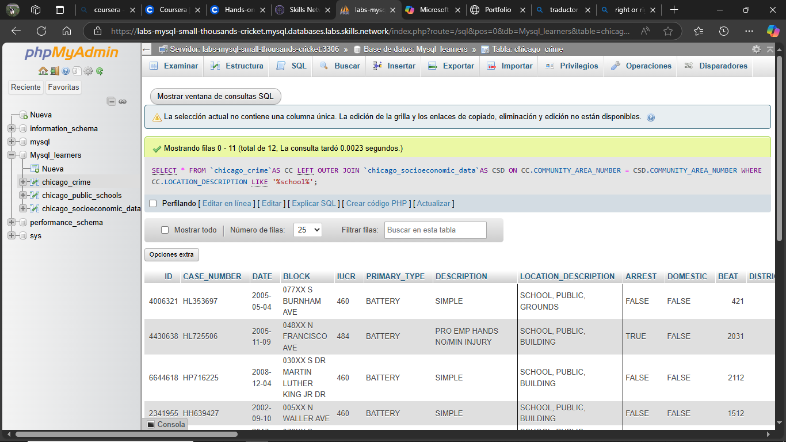
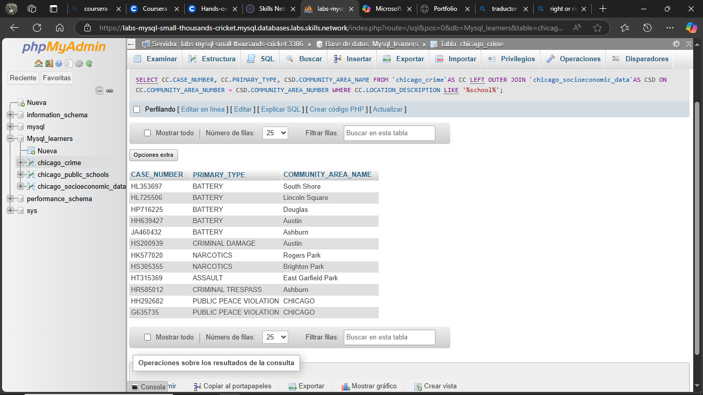
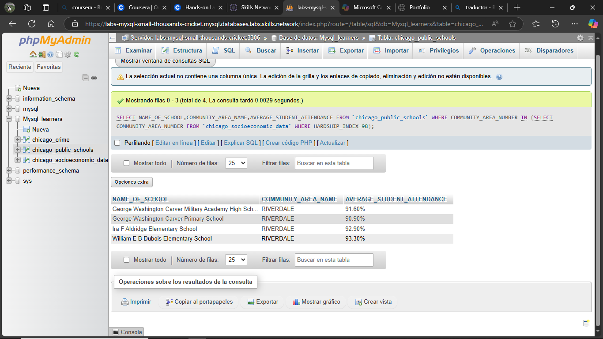

Carga de la base de datos
Configuré una base de datos nueva e importé la información desde los archivos de dump proporcionados, como punto de partida para todo el análisis posterior.
Consultas SQL · Vistas · Stored Procedures · Transacciones
Este proyecto lo hice para llevar mi conocimiento de SQL más allá de las consultas básicas — quería entender no solo cómo pedir datos, sino cómo protegerlos y mantenerlos consistentes en un sistema real. Trabajé sobre una base de datos de escuelas públicas de Chicago, cruzando información de asistencia, nivel socioeconómico (índice de "hardship") y reportes de incidentes de seguridad — datos que, en la vida real, alguien tendría que manejar con mucho cuidado por su sensibilidad.
Configuré una base de datos nueva e importé la información desde los archivos de dump proporcionados, como punto de partida para todo el análisis posterior.
Usé joins para cruzar información entre distintas tablas (escuelas, comunidades, crímenes) y sub-queries para filtrar y refinar los resultados según condiciones específicas.
Practiqué dos técnicas de consulta relacional sobre datos públicos de Chicago: un LEFT JOIN para identificar crímenes ocurridos en instalaciones escolares, cruzando la tabla de crímenes con la de datos socioeconómicos por área comunitaria; y una sub-query para encontrar las escuelas ubicadas en la comunidad con el índice de privación socioeconómica más alto de la ciudad (hardship index = 98).
Creé vistas que exponen solo las columnas necesarias, ocultando los campos originales — un ejercicio de pensar en privacidad de datos desde el diseño, no como un parche después.
Desarrollé un stored procedure para actualizar campos de calificación y sus indicadores asociados, incorporando manejo de transacciones para garantizar la integridad de los datos.
Implementé rollback y commit en el stored procedure: si los datos de entrada no son válidos, el sistema revierte automáticamente los cambios en vez de dejar la base de datos en un estado inconsistente a medias.
Estas consultas fueron independientes entre sí, cada una resolviendo una pregunta puntual del set de ejercicios. Lo que demuestran en conjunto no es un análisis integral único, sino dominio de dos formas distintas de relacionar tablas por una clave común (COMMUNITY_AREA_NUMBER): join y sub-query, eligiendo la técnica correcta según lo que la pregunta requería.


